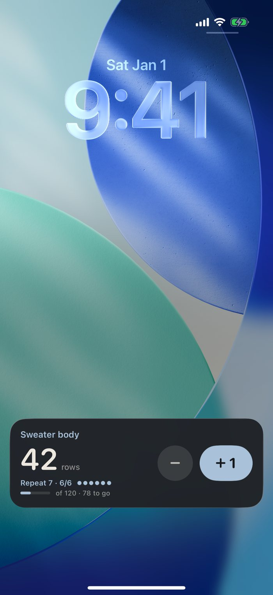
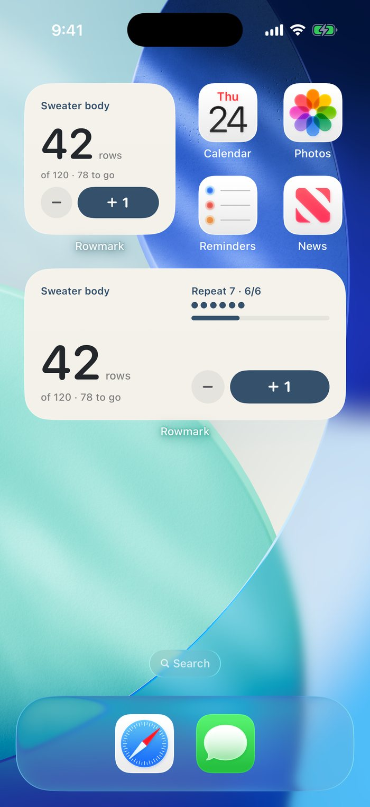

How to count knitting rows from your iPhone Lock Screen
Unlocking your phone, finding the app and tapping +1 — with needles in both hands, every row. A counter on the Lock Screen cuts that down to one tap.
Here are the ways to count without opening the app in Rowmark, a row counter for knitting and crochet.
Three ways to count without opening the app
Where
What you press
Price
Home Screen widget (Small)
+1 and −1 on the widget
Free
Lock Screen counter
+1 and −1 on the Lock Screen, in the Dynamic Island and in StandBy — without unlocking
Pro
Action Button and Control Center
“+1 row” (iOS 18 or later; Action Button on iPhone 15 Pro and later)
Pro
Rowmark Pro is a one-time purchase, not a subscription.
Count from the Lock Screen
Open Rowmark and tap the project you're knitting under Projects.
Under “Count without opening the app”, turn on “Lock Screen”.
Lock your iPhone. The counter shows the project, the row you're on, and +1 / −1 buttons you can press while it stays locked.

iOS keeps a Lock Screen counter running for up to about 8 hours at a time. When it has gone, open Rowmark and turn “Lock Screen” on again. Your count is kept.
+1 with the Action Button
On iPhone 15 Pro and later with iOS 18 or later:
Open Settings › Action Button.
Choose Controls, then Rowmark.
A press of the Action Button now counts one row on your current project. You can also put “+1 row” in Control Center, or swap a button at the bottom of the Lock Screen for it (touch and hold the Lock Screen › Customize).
Free: +1 on the Home Screen
Touch and hold an empty area of your Home Screen until the apps jiggle.
Tap Edit (or +), search for “Rowmark”, choose the Small size and tap Add Widget.
Tap +1 or −1 on the widget. The app doesn't open.

Questions
The counter disappeared from my Lock Screen.iOS ends a Lock Screen counter (a Live Activity) after about 8 hours. Open Rowmark and turn “Lock Screen” on again. Your count is kept.
It says Live Activities are off.Turn them on in Settings › Rowmark.
Can I count on the Lock Screen for free?The Lock Screen counter, Lock Screen widgets and the Action Button are part of Rowmark Pro, a one-time purchase. +1 and −1 on the Small Home Screen widget are free, without opening the app.
I'm knitting more than one project.The Lock Screen counter follows the project you pick in the app. Tap another project under Projects and the counter switches to it.